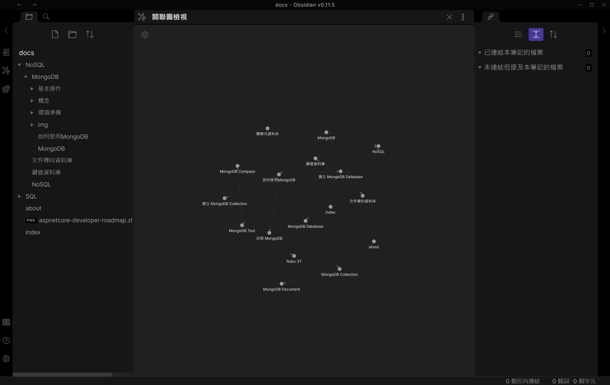
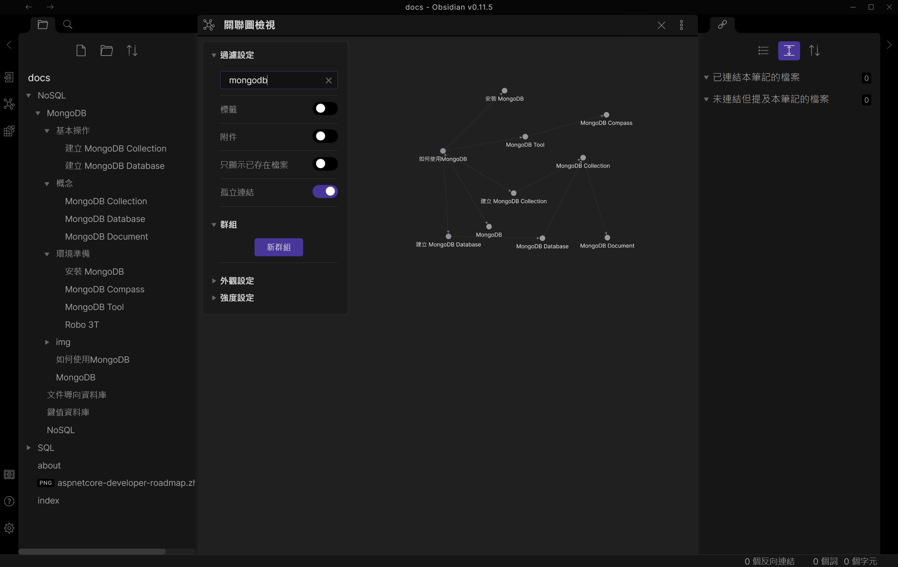
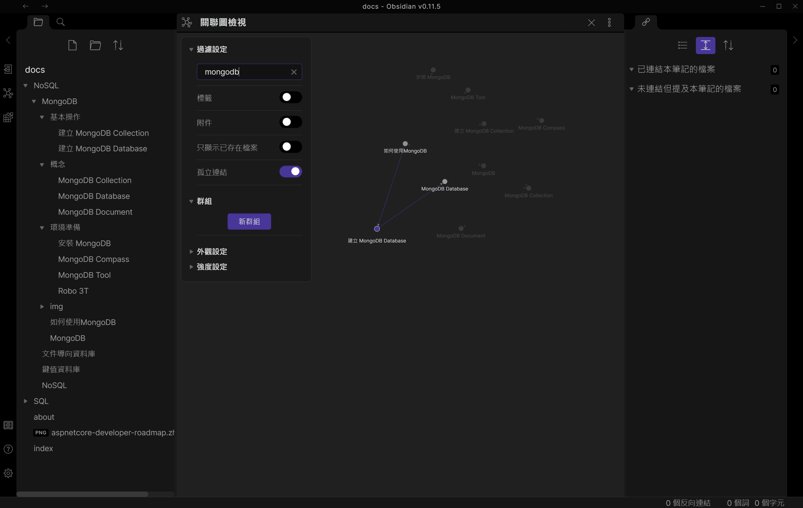

Obsidian筆記軟體介紹
索引
前言⌗
一直以來都想用數位筆記來幫助自己學習，也希望透過透過建立筆記的方式，建立自己的專屬資料庫，方便日後不管是在工作或是專案上面，可以更快速找到需要的內容。
但正因為使用數位工具的關係，導致我自己常常會想要盡量蒐集完整，全部相關的資訊都到裡面，到頭來反倒是為了蒐集資料而做筆記，並沒有真正的消化筆記的內容。
這一段時間也苦惱了許久，本來 Blog 的一部分用途，就是希望自己能夠紀錄不管是曾經踩過的坑，或是還在發想中的想法，做一個整理與匯集，不過受限於主題與架構方面，要實際管理上還是遇到了不小的困難，而且反思自己到底要的是甚麼後，發覺Blog的形式也許做不到我心目中知識庫的樣子。
也因此，找了許多的工具與想法，目前開始嘗試看看 Obsidian 這套筆記軟體。
介紹⌗
👉特色⌗
- 透過關鍵字連結，找到各個文章中出現過同樣的概念，建立連結圖，讓我可以知道，原來這些文章之間是有關連性的，看到之後會讓人更進一步想下去，這些關聯是甚麼。
- 將筆記分成多個單一的概念，通過這些概念的連結，讓我們對於這些主題的相關性，可以一目了然。
- 全部透過 Markdown 語法完成，未來不管是要轉移到新的筆記軟體，或是平台，都會比特規的規格靈活性更高。
🧠使用心得⌗
我覺得這套軟體算是強迫使用者將每一則記事的內容精簡概要，且不希望每一篇的內容太過複雜。也許這就是卡片盒筆記法所強調的概念連結!?
PS: 卡片盒筆記法可以參考右方連結，有詳細的說明。這裡
例如，我最近正準備開始學習使用 MongoDB，我想要把一些基本的概念先記下來，像是 MongoDB Database 與 MongoDB Collection，因為個別的內容都很單純，只是概念上的描述。我一開始是想要做成一個檔案，叫做 MongoDB Database & Collection，但很快我就發現了問題，當我整理筆記內容時，要連結到 MongoDB Database，可是我只有建立 MongoDB Database & Collection，變成我無法單純連結到這個檔案上面。
👉 連結文字與檔案名稱必須完全相符，這是缺點或是優點見仁見智，但正是因為這種限制，強制讓我拆解兩個檔案分別記錄兩個概念的內容，這也與卡片盒筆記法的概念相符。
所以，每一則記事的標題，都必須要完整且簡短，雖然看起來很矛盾，但我實際上用起來的感覺的確是如此。
例如，當我要新增筆記用來說明「MongoDB Database」，我必須新增"MongoDB Database"的檔案，而不是DataBase的關聯，因為Database是更大的集合，如果用掉了Database，那之後要說明Database這個概念的時候，就會衝突了。
一開始也許會有點不適應，可以在過程中先強迫自己跟著設計的思維，整理自己的想法，會陸陸續續感受的這種筆記概念所帶來的好處與優點。
🧐最印象深刻的感受⌗
隨著筆記數量的增多，可以看到關聯圖這邊的點就會越多 
這時候我們可以透過關鍵字去過濾出我們想要的內容，馬上可以看到有哪些概念是我們可以去開始查詢的 
點著我們想要查詢的知識點，上游跟下游連結的知識也會被跟著亮起來。
馬上可以知道，建立 MongoDB Database，是從如何使用的這個概念去出發的，然後如果還不清楚甚麼是 MongoDB Database，這時候就應該先去了解這個東西的定義。 
由此可見，這種筆記方式相比於傳統筆記有兩個特點。
- 搜尋知識點的方式：傳統筆記一定是從目錄的標題先開始尋找，然後看看有沒有想要的內容，但是內容內彼此關聯的地方，卻沒有辦法有效成呈現出來；相反地，Obsidian 這種筆記的方式，更像是腦袋靈光一閃的結果，想到某一個概念，相對應的廉潔與經驗就會想起來(記憶力好的話😭😭)。
- 強迫自己整理好每個單一概念的內容，先把零碎的觀念整理好，在逐漸把這先觀念的連結建立起來，比起一開始就要自己整理出有脈絡的內容，不僅更加快速，而且可以針對每個個小觀念做確認，幫助自己更加理解要學習的東西的全貌。
✍延伸閱讀⌗
一部淺顯易懂的 Obsidian 介紹影片，頻道內還有許多電腦軟體的使用技巧，有興趣的人可以去看看。